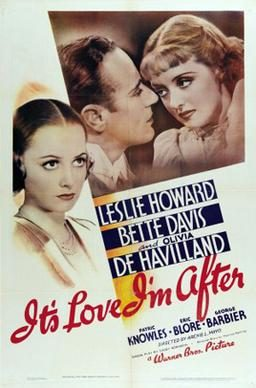

It's Love I'm After
Studio: First National Pictures
Starring: Leslie Howard, Bette Davis, Olivia de Havilland
Director: Archie Mayo
Writer: Casey Robinson
Producer: Harry Joe Brown, Hal B. Wallis
It's Love I'm After is a 1937 American screwball comedy film directed by Archie Mayo and starring Leslie Howard, Bette Davis, and Olivia de Havilland. Based on the story "Gentlemen After Midnight" by Maurice Hanline, with a screenplay by Casey Robinson, the film is about a couple who have postponed their marriage eleven times and who continue to plot and scheme their way to marriage.
Trivia
- Leslie Howard originally envisioned either Gertrude Lawrence or Ina Claire, both noted for their comedic stage performances, as his leading lady, although they had limited experience in films.
- Producer Hal B. Wallis had director Archie Mayo meet with Lawrence, who was interested in playing the role, but when Wallis and Howard screened the 1936 British film Men Are Not Gods, they agreed Lawrence did not photograph well.
- The film began production without a leading lady.
Previous Showings
5 Runs • 4 Festivals
All runs on record (5):
- May 31 - June 1, 2008w/ That Certain Woman
- March 17 - 18, 2011Winter 2011 Early Bette Davis, Val Lewton and morew/ That Certain Woman
- May 13 - 15, 2016Olivia de Havillandw/ Captain Blood
- May 31 - June 1, 2018Bette Davis Complete early films: 1931 - 1938w/ That Certain Woman
- September 14 - 16, 2018Bette Davisw/ Of Human Bondage